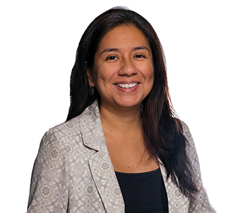

Assistant Professor · Marist University
Machine learning for sequential data — sign language, iconicity, and AI for social good. Bridging communities across Latin America, the Deaf world, and computational research.
"Enabling AI to understand sign language — advancing both capability and access."

About
Dr. Gissella Bejarano is an Assistant Professor of Computer Science at Marist University, where she leads the AI2050 Project exploring analogical reasoning through iconicity in signs and gestures.
Her research sits at the intersection of machine learning, sign language processing, and AI for social good. She led the creation of the first Bilingual Peruvian Sign Language–Spanish Online Dictionary (dvlsp.link), a landmark resource for the Deaf community in Peru.
Originally from Peru, Dr. Bejarano earned her PhD from SUNY Binghamton as a Fulbright Scholar and conducted postdoctoral research at Baylor University. She has served as an AI expert for the Peruvian Government and is an active member of LatinxInAI and the Research Experience for Peruvian Undergrads (REPU).
Research Focus
Isolated and continuous sign language recognition using pose estimation, skeleton-based models, and on-device inference techniques for accessibility in real-world conditions.
Exploring how AI can understand iconicity — the visual resemblance between a sign and its meaning — through the AI2050 Project, bridging linguistics and machine learning.
Developing AI systems that center underrepresented communities, from Peruvian Sign Language resources to smart city forecasting and emergency response prediction.
Selected Publications
Lazo-Quispe, C., Castro-Cruz, R., Salazar-Espinosa, M., Bejarano, G.
Rodríguez-Mondoñedo, M., Cerna-Herrera, F., Ramos, C., Arnaiz, A. et al., Bejarano, G.
Salazar, M., Bandara, D., & Bejarano, G.
Huamani, J., Vasquez, C., Oporto, S., Cerna, F., Ramos, C., Rodriguez-Mondoñedo, M., Bejarano, G.
Huamani, J., Bejarano, G.
Laines, D., Gonzalez-Mendoza, M., Ochoa-Ruiz, G., Bejarano, G.
Bejarano, G., Huamani-Malca, J., Cerna-Herrera, F., Alva-Manchego, F., Rivas, P.
Quevedo, E., Rahman, M.S., Bejarano, G., Cerny, T., Rivas, P.
Bejarano, G., Defazio, D., Ramesh, A.
Bejarano, G., Jain, M., Ramesh, A., Seetharam, A., Mishra, A.
Funding & Recognition
AI4Good Lab · Marist University
Get in Touch
Reach out for research collaboration, speaking invitations, or mentorship opportunities.